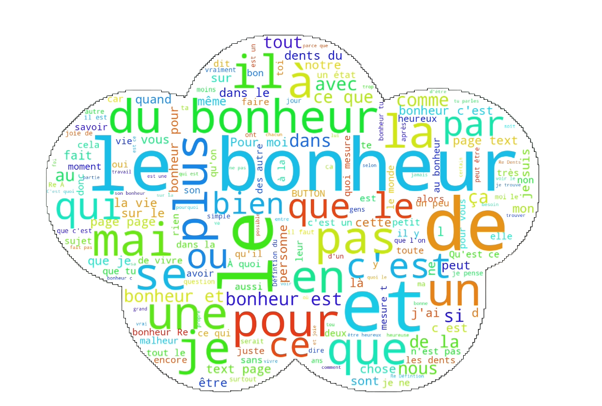
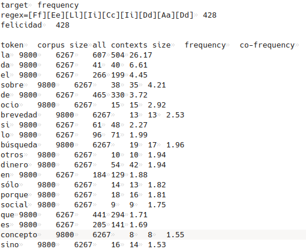

Analyses iTrameur en PDF
Ci-dessous, vous trouverez 3 boutons qui vous enverront vers l'analyse en format PDF du français, espagnol, et polonais
Analyse en Français
I. Introduction
Dans l’univers infini qui constitue le langage, le mot "bonheur" émerge comme une entité complexe, englobant une multitude d’émotions et de perceptions. Grâce au logiciel iTrameur (https://itrameur.clillac-arp.univ-paris-diderot.fr/ ), nous avons l’opportunité d’explorer ce mot dans la langue française. Pour cela, nous allons tenter de comprendre les différentes nuances de ce mot, mais aussi comment il se tisse dans notre quotidien. En effet, nous avons décidé de travailler sur des forums en ligne afin d’avoir un corpus qui est enrichi par la vision des gens. Les forums en ligne sont un endroit idéal pour que les gens s'expriment librement et comment ils échangent avec les autres utilisateurs. En nous plongeant dans les différentes discussions, nous allons pouvoir explorer les diverses perspectives qui convergent au sein de notre société : la recherche du bonheur. Ainsi, nous allons tenter de comprendre comment le "bonheur" se manifeste dans le langage.
II. Analyse
A) Vérification de notre corpus
Avant de commencer notre analyse, nous devons voir si notre script a bien fonctionné, c’est-à-dire mettre les balises correspondantes avec le délimiteur de section. Notre fichier contexte et dumps-text doit avoir ce format :
< lang="fr"> < page="fr_1"> < text>Ici, le contenu du fichier fr_1,< /text> < /page> § < page="fr_2"> < text>Là, le contenu du fichier fr_2< /text> < /page> § < /lang>"
Lorsqu’on charge notre corpus, nous pouvons voir que le logiciel iTrameur a bien segmenté notre fichier et il a bien délimité tous nos fichiers. Nous pouvons voir ces carrés qui apparaissent pour voir les différentes pages de notre corpus.

Ensuite, nous pouvons voir si chaque carré a bien du texte à l’intérieur. Pour cela, nous devons vérifier si dans chaque carré nous avons notre texte/body de chaque lien.

En cliquant sur nos carrés, nous pouvons voir qu’il y a bien du contenu textuel à l’intérieur de chaque balise < page>< /page>. En effet, cette étape est très importante car cela nous permet de faire une analyse concrète et non biaisée avec du contenu qui s’affiche mal.
Ensuite, nous pouvons voir dans l’onglet "Cadre", puis dans l’option "Cadre" l’arborescence de notre fichier.

Nous pouvons voir que notre arborescence dans le fichier est correcte et que dans la balise langue nous avons toutes nos pages, et dans chaque page nous avons notre texte.
Lorsque nous avons exécuter notre script pour iTrameur, nous avons rencontré des difficultés au niveau des balises et au niveau du contenu. Par exemple, nous avons remarqué que la première page était bien < page=”fr_1”>, mais ce n’était pas le contenu de fr_1 mais de fr_10. Nous avons pu modifier cela, en mettant bien le contenant pour chaque lien , mais cela à mis pages dans le désordre. Nous pouvons le voir parce que le premier fichier de page est bien fr_10.
B) Dictionnaire
Après notre vérification de corpus terminée, nous avons décidé de nous diriger dans l’onglet "Trame", puis dans "Dictionnaire".
Le dictionnaire va nous permettre d’afficher toutes les formes de notre mot selon la fréquence : du plus fréquent au moins fréquent.
Avec l’option du dictionnaire, il est possible de projeter chaque item sur :
- la concordance
- la ventilation
- la carte des sections
- la sélection
Dans notre corpus, nous pouvons voir que le mot “bonheur” apparaît de plusieurs manière : au singulier et au pluriel, mais aussi en majuscule et en minuscule.
Nous pouvons justifier ces différentes formes par le fait que ce soit un corpus venant de forums en ligne, donc les utilisateurs écrivent de la manière qu'ils souhaitent. Par exemple, nous pouvons voir la forme "bOnHeUr" ou encore ">bonheur". Ce sont des facteurs qu’il faut prendre en compte parce que gens sont libres d’écrire ce qu'ils veulent et comment ils veulent avec le clavier : avec des fautes de frappe ou d’orthographes.
Mais aussi, nous allons nous concentrer sur le mot "bonheur" écrit en minuscule et singulier parce qu' il apparaît 1130 fois. Mais aussi, "Bonheur" apparaît 74 fois mais à l’aide de notre concordancier développé sur notre site, nous avons vu que ce sont des occurrences qui apparaissent au titre de notre forum, tels que : "#La perte du Bonheur" ou encore "#Discussion: Bonheur".
C) Ventilation
Nous allons nous intéresser à l’onglet "Cadre", puis dans l’option "Ventilation". La ventilation nous permet d’avoir trois graphiques. Le premier graphique (en haut) est réalisé en fonction de la fréquence absolue du pôle recherché. Ce graphique sera très intéressant pour notre analyse parce que il est réalisé en fonction du nombre d’occurrences de notre forme du mot dans le corpus. Nous avons décidé de choisir la partition pages dans les paramètres mais il est possible de faire la partition sur d’autres facteurs. La partition selon les pages va nous permettre de d’avoir en vu toutes les pages sur l’axe horizontal. Mais aussi, nous allons voir combien de fois notre page contient le mot "bonheur".
Dans le premier graphique nous pouvons voir qu’il y des différences au niveau de l’apparition de notre mot.
Par exemple, dans la page fr_8, nous avons 74 occurrences, dans fr_26 nous avons 71 occurrences, et dans fr_1 on en a 60.Nous pouvons donc voir que dans notre corpus, nous avons des pages qui ont généré beaucoup de discussion entre les utilisateurs car le nombre d'occurrences apparaît beaucoup de fois.
Au milieu, nous avons la fréquence relative, mais notre graphique ressemblait à celui de l’absolue donc dans notre analyse cela ne semblait pas intéressant car nous voulions expliquer de nouvelle chose et non nous répéter.
Pour finir, nous avons le graphique de spécificité qui nous permet d'analyser la spécificité d'apparition d'un événement textuel dans une partie d'un corpus plutôt qu'une autre.

Nous pouvons voir que les pages que nous citons auparavant sont incluses dans les indices positifs et non dans le négatif. Nous pouvons observer que les pics les plus hauts deviennent positifs et les pages qui ont moins d’occurrences sont négatives.
D) Cooccurrents
Dans cette partie nous allons dans l’onglet "Coocs", puis dans "Cooccurrents". L'onglet "Coocs" va nous permettre de rechercher les cooccurrents de notre mot, entré dans les paramètres en cliquant sur le bouton "cooccurrents*". Le calcul de cooccurrence est réalisé en prenant en compte les cooccurrents dont l'indice de spécificité est supérieur à la valeur, c’est-à-dire dans nos graphiques.
En traitement automatique du langage, l'analyse de la cooccurrence peut être utilisée pour extraire des relations sémantiques entre des mots et en examinant les patterns dans lesquels ils se trouvent. Ainsi, cela peut nous permettre de comprendre les associations et les liens entre le mot choisi.
Tout d’abord, nous allons voir les mots qui apparaissent le plus souvent près du mot "bonheur". Pour cela, nous avons pris des captures de la table en nous concentrant sur les différentes fréquences mais aussi sur l’indice de spécificité qui est supérieur.
Tout d’abord, le premier mot qui a retenu notre intention est "Dents". Au début, nous nous sommes demandé pourquoi le mot "dent" avait un indice de spécificité important pour être placé dans les mots les plus importants. Nous avons donc cliquer sur ce mot pour avoir le contenu des phrases.Lorsqu’on clique dent :
Lorsque l’on pense au mot "bonheur" on peut ne pas penser au mot “dent” mais en remarquant les phrases on comprend mieux pourquoi "dents" est placé dans ce tableau. Nous pouvons voir que "dents" fait référence au dent de bonheur, et les utilisateurs demandent des renseignements ou expriment leur point de vue/ expérience sur les dents du bonheur. Le mot “bonheur” peut donc faire partie d’un champ lexical médical car les personnes peuvent l’utiliser dans un contexte particulier, comme la santé.
Ensuite, nous pouvons voir que les premier résultats sont des déterminants ou bien des prépositions, mais cela est tout à fait normal dans la langue française. Ensuite, nous pouvons voir "quoi" et "atteindre". Nous pouvons voir que ces deux apparaissent le plus souvent parce que lorsqu’on regarde leur contexte d’apparition leurs résultats sont intéressants.
Nous pouvons voir que "quoi" et "atteindre" sont souvent utilisés dans des phrases interrogatives parce que les gens se demandent qu'est-ce que le bonheur et comment on peut l’atteindre. Mais aussi, dans les résultats on veut que c’est un état qui est mesurable. Les utilisateurs utilisent souvent des échelles sur la satisfaction de leur vie ou bien des questionnaires sur le bonheur. Ces mesures visent à évaluer la façon dont les individus évaluent leur propre bonheur et satisfaction dans la vie.
Par ailleurs, le verbe être "est" apparaît avant car les gens communiquent en définissant pour eux ce que c’est le bonheur. Ce schéma ressemble à un cycle parce que les gens se demandent ce qu'est le bonheur, comment l’atteindre ou encore comment peut-on le mesurer. Mais aussi, après avoir écrit les questions sur les forums, les autres peuvent définir ce qu’est pour eux le bonheur.
Ensuite, nous pouvons trouver une liste de mots qui correspond à un champ lexical de l'exploration et de la quête, tels que : "recherche", "conception", "ultime", "notion", "quête", "perception", "propre" etc… Mais aussi, un champ lexical plutôt négatif avec "argent", "égoïste" ou encore "tabou".
Ainsi, nous pouvons voir que le bonheur est un terme riche sémantiquement car il englobe une gamme complexe de mots. Pour certain elle peut représenter une moment de satisfaction mais pour d’autre c’est bien plus. Ce mot incarne une quête constante et prend en compte plusieurs facteurs dans la vie humaine. Cela passe par un sentiment individuel de bien être, à la recherche d’accomplissement. Sa polysémie se manifeste à travers la diversité des expériences humaines qui contribuent à la recherche de cet état. Ainsi, explorer ces nuances nous ont permis de montrer les multiples facettes de ce mot et de voir qu’il contient une richesse lexicale et une complexité à cause de l’expérience des individus.
E) Spécifs-totales* et Spécifs-partie*
Pour finir, cette analyse nous avons voulu voir l’onglet "Cadre" et les options "Spécifs-totales*" et "Spécifs-partie*".

Ces deux options nous permettent de confirmer nos hypothèses du début de notre analyse. Le mot "bonheur" est utilisé : "bonheur", "Bonheur" ou bien "bonheurs". Les autres configurations que nous avons vu correspondent surement au faute de frappe ou bien au choix de l’utilisateur.
III. Nuage de mot
Dans cette dernière partie , nous allons observer le nuage de mots que nous avons fait avec le logiciel wordcloud_cli. Voici les commandes que nous avons fait après avoir créé un environnement virtuel et installé la librairie :
wordcloud_cli --text itrameur/contextes_fr.txt --image contextes_fr.png --scale 3 --mask cloud.png --background white --contour_width 1 --contour_color black
wordcloud_cli --text itrameur/dumps-text_fr.txt --image dumps-text_fr.png --scale 3 --mask cloud.png --background white --contour_width 1 --contour_color black

Voici le résultat du nuage de mot qu’on a généré à partir de nos dumps-text qui regroupent tous notre contenue HTML de chaque page. Nous pouvons voir que ce résultat affiche plus les stopwords du français, mais aussi les différentes terminaisons du mot "bonheur". Nous pouvons voir que dans les forums le mot "bonheur" était central et que ce mot a généré beaucoup de discussion autour de cette symbolique. Nous pouvons voir des mots tels que "vie", "heureux" ou "personne". Nous pouvons voir que les utilisateurs ont utilisé ont expliqué leur point de vue car on voit l'utilisation des pronoms associé à des verbes ou non : "je suis", "c’est" , "c est", "elle", "j’ai", "sont", "vous", "moi" etc…
Ensuite, nous nous sommes plus concentrés sur le contexte parce que il était généré pour avoir le contexte gauche et droit de notre mot.
Même si, nous retrouvons les stopwords du français, nous avons aussi des résultats qui confirment de nouveau notre analyse. Tout d’abord, on retrouve bien les cooccurrents qu’on a vu précédemment "dents", "heureux" , "un état", "mesure", "simple", "joie" etc… Si on ne compte pas le mot “dents”, on voit que ce mot est entouré de mot considéré comme positif. Par ailleurs, il peut générer des questionnements, car nous retrouvons "définition du", "question", "c’est quoi ", "je trouve" etc… Les personnes se demandent comment on pourrait atteindre le bonheur mais surtout se demander qu’est-ce que c’est.
De plus, nous pouvons voir que "Re" apparait. Ce token correspond aux discussions qui ont été générées par les utilisateurs, donc les utilisateurs ont répondu au questionnement des personnes ou bien des discussions en rapport avec le bonheur. Attention, il ne faut pas oublier que ce mot à aussi son antonyme qui est "malheur" et où il peut aussi apparaître et représenter aussi un champ lexical négatif.
IV. Script Python : PALS
Pour finir notre analyse, nous avons décidé de créer un script PALS pour compléter nos différentes analyses sur les autres logiciels : iTrameur et le Wordcloud.
Tout d’abord, nous avons élaboré un script qui permet de reprendre notre second fichier contextes_fr.txt et où une seule ligne correspond à un mot. Une des difficultés était de nous adapter aux caractéristiques de chaque langue, dont les accents, la ponctuation et les caractères diacrités.
Par exemple, en français nous devions prendre en compte tous les accents aigus, graves et circonflexes des voyelles, la cédille de la consonne "c". Ainsi, dans notre rgex nous avons voulu être les plus précises car sinon lorsqu’on lançait les script cela pouvait poser des problèmes à certains endroit. De plus, nous avons voulu diviser nos phrases afin qu’on puisse mieux se retrouver dans le document. Ainsi, dans notre script on explique que lorsqu' il trouve la ponctuation du point alors il saute une ligne.
Lorsqu’on a obtenu notre document qui nous semblait correct, nous l’avons lancé avec le script Python que les professeurs nous ont fourni et comparer les résultats. Les résultats que nous avons obtenus pour le français ne nous ont pas beaucoup étonné parce qu' on retrouve pratiquement les mêmes résultats.
Tout d’abord, en prenant compte toutes les possibilités que le mot "bonheur" apparaît dans notre corpus, on peut voir que sa fréquence totale est 1212. Mais aussi, que "bonheur" a une fréquence beaucoup plus élevée car il apparaît 1134 fois.
De plus, on peut voir que les tokens sont classés par spécificité, c’est-à-dire avec quel mot "bonheur" est le plus associé. En français, les premiers résultats sont toujours les stopwords. Par exemple, le token "le" a la plus grande fréquence d’apparition avec le mot cible, suivi de "du" etc…
Ensuite, on retrouve de nouveau "Re" qui nous permet d’ affirmer que les forums reprenant le thème du "bonheur" a suscité beaucoup d'intérêt chez les utilisateurs car cela a diffusé un échange. Lorsqu’un utilisateur répond à un message, au début du titre il y aura "Re", ce qui signifie "réponse".
Mais aussi, on retrouve de nouveau le mot "dents" qui a une spécificité élevée, 7.05. Par ailleurs, nous pouvons confirmer notre hypothèse car on voit que la fréquence et la co-fréquence sont liées. Le token "dents" apparaît 46 fois, mais ce qui est intéressant c’est que 43 fois le token apparaît en même temps que le mot cible.
Pour finir, on retrouve encore nos différents champs lexicaux avec les tokens comme "mesure", "quoi", "Définition", "est", "état", "vivre", "esprit", "argent", "joie", "absolu" ou encore "malheur". Ainsi, notre mot cible "bonheur" est utilisé fréquemment dans les forums, avec différentes variations, et il est souvent associé à des contextes spécifiques et à différents champs lexicaux.
Analyse en Espagnol
I.Introduction
Cette analyse est faite à partir des dump.textuels des forums où le mot "felicidad", en espagnol, apparaît. Une fois après avoir vérifié que les pages sont bien imbriquées dans le texte et que les bordures des rectangles ne se croisent pas, les spécificités qui abordent la fréquence des items dans le corpus, ont été analysées.

II. Analyse
Spécificités totales
Les spécificités nous permettent de savoir quelle est la fréquence totale d'un item (mot) par rapport à la partition choisie, qui, dans ce cas-ci, fait référence à la langue (espagnol). Par rapport à cela, nous avons obtenu le résultat suivant :
>Affichage 1 - 10 de 3,100 items

Affichage 21 à 30 de 3,100 items
La fréquence absolue
Le graphique de ventilation a démontré que c’est dans le corpus du dump text 49 qu’ il y a la plus grande quantité d’occurrences du mot “felicidad”. Ce forum de caractère philosophique cherchait à répondre à la question si le bonheur se trouve en soi-même et en a obtenu 21 réponses. Les dump text qui possèdent la moindre quantité d’occurrences, comme le 31 et le 32, parlent des thèmes qui ne sont pas strictement liés au bonheur, tels que le système d'objectifs et récompenses et quelle serait l’app idéale. Cela nous permet de confirmer que ce sont les forums qui portent directement sur le mot “felicidad” qui ont la plupart de résultats parce que les usagers d’internets répliquent le mot le plus souvent dans leurs réponses.
La concordance
L'onglet concordance semble intéressant parce qu'il permet de vérifier quel est le contexte d'utilisation du mot "felicidad", face à "felicidades", ce qui pourrait entraîner des problèmes pour quelqu'un qui n'est pas usager de l'espagnol. Tandis que le mot "bonheur" permet la flexion pour construire le pluriel. "Felicidad" entraîne un cas de dérivation, étant donné que Felicidades ne porte pas le même sémantisme. Le mot felicidad a été cherché dans toutes ses possibilités d'apparition, comme "felicidad, FELICIDAD, Felicidad".
Les coocurrents
iTrameur
Cette partie permet l'analyse de l'occurrence de deux formes données face à la leur présence simultanée. Pour le faire, on a tapé le mot "felicidad" dans la boîte de dialogue de paramètres. Cela nous montre que le mot est fréquemment accompagné du déterminant féminin "la".
L'apparition du cooccurrent "la" nous semble prédictible. Même si l'espagnol est une langue qui permet l'emploi des substantifs sans exiger leur déterminant, l'usage répandu des articles définis est évident. Aussi, la présence du verbe dar (donner) conjugué à la troisième personne du singulier nous semble intéressant du fait que le substantif "felicidad" peut, d'un côté , être le sujet dans des phrases type "la felicidad da tranquilidad" (Le bonheur donne du calme), mais elle peut aussi être l'attribut "el dinero da felicidad" (l'argent donne/apporte du bonheur). Il s'avère intéressant les fonctions syntaxiques que ce mot occupe dans la phrase, ce qui pourrait aboutir à des conclusions sociolinguistiques par rapport à la perception du bonheur des hispanophones. C'est le bonheur qui donne quelque chose ? ou on pense au bonheur comme l'obtention de quelque chose ?
On pourrait aborder cette dernière question avec l'analyse du quatrième coocurrent "busqueda" (recherche). Il semble que, au moins dans cet extrait du corpus qui est encore vraiment restreint pour rendre compte de relations sociolinguistiques que les hispanophones font autour du mot bonheur, les usagers considèrent le bonheur comme une fin, comme un objectif qu'on veut atteindre.
PALS
On pourrait bien comparer ces coocurrents avec les résultats des scripts PALS. Pour pouvoir les utiliser, nous avons fait un script qui nous a permis de créer un fichier où chaque ligne correspond à un mot, qui peut être diacrité ou non.
Ensuite, nous avons lancé le script et nous avons trouvé que le mot "busqueda" n'est pas le plus coocurrent, comme dans les résultats d'iTrameur.
Le mot "ocio" (loisir) s'y trouve avant, ainsi que le mot "brevedad" (brièveté). Par rapport à cela on pourrait se demander si les hispanophones considèrent que le bonheur s’atteint juste à travers des loisirs et que c’ est quelque chose d'éphémère. C’est certainement une question à aborder à l’avenir.
Pour ce qui est du Wordcloud, les mots qui apparaissent le plus fréquemment sont la conjonction "que" et la préposition "de", parmi d'autres prépositions et conjonctions, ce qui peut être facile à interpréter parce que celles-ci sont très utilisées dans le discours. Aussi, on trouve le mot "felicidad" accompagné de différents mots comme "la felicidad" ou "felicidad es", comme si le wordcloud comprennait quelques syntagmes comme des mots isolés. Pour ce qui est du semantisme du wordcloud, il est intéressant l'apparition du mot "dinero", comme si les hispanophones associaient fréquemment le bonheur avec l'argent, ce qui intéresse le domain socio-économique. De même, on reconnaît les mots "vida", "ocio" et "busqueda", dont on a parlé avant.

Analyse en Polonais
I.Introduction
Avant de commencer, nous pouvons déjà dire que la complexité de la grammaire polonaise rendra certainement l’analyse plus difficile dans une certaine mesure. Or, en polonais, il y a 7 cas de noms (déclinaisons), ce qui n'est pas le cas en français ou en espagnol. Voilà, les déclinaisons du nom szczęście :
| Déclinaison | Singulier | Pluriel |
|---|---|---|
| Nominatif : | szczęście | szczęścia |
| Génitif : | szczęścia | szczęść |
| Datif : | szczęściu | szczęściom |
| Accusatif : | szczęście | szczęścia |
| Instrumental : | szczęściem | szczęściami |
| Locatif : | szczęściu | szczęściach |
| Vocatif : | szczęście | szczęścia |
Si nous devions donner une définition simple du mot bonheur, nous dirions qu'il s'agit d'une émotion provoquée par des expériences positives. Quand nous tapons le mot bonheur dans une recherche Google, nous trouvons de nombreux articles donnant des conseils sur la façon de trouver le bonheur dans la vie. Les principaux conseils donnés pour trouver la recette du bonheur sont : d'adopter une attitude positive face à la vie, de s'entourer de bonnes personnes, d'être reconnaissant pour ce que nous avons, d'aider les autres, de développer ses passions, de sourire et de ne pas se comparer aux autres. D'après notre observation et notre expérience, nous dirions également que les gens sont heureux grâce à l'amour, à la famille, aux amis et à un travail qui leur convient.
II. Analyse iTrameur
Vérification du corpus
Grâce à iTrameur nous pouvons maintenant voir dans quelle mesure nos observations concordent avec les mots les plus fréquents de notre corpus.
Après avoir chargé le fichier approprié avec le fichier texte, on nous montre des carrés correspondant à chaque texte. Après avoir cliqué sur le premier carré, nous voyons le texte dump de la première page avec le mot szczęście marqué en rouge.

Maintenant nous nous assurons que le dump texte correspond à la trame iTrameur.
Dictionnaire
Pour commencer, nous avons décidé de consulter le dictionnaire qui se trouve sous l'onglet Trame. Le mot szczęście apparaît au tout début du dictionnaire, avec une fréquence égale à 593.
Cependant, comme en polonais les noms sont conjugués, nous voulons prendre en compte tous les cas de figure des mots. En outre, nous compterons également les mots sans caractères polonais. En effet, l'objet de notre analyse étant les forums Internet, où le langage est plutôt informel, il y a de nombreux cas où les gens n'utilisent pas de caractères diacritiques.
Lorsque nous cherchons le début du mot szczęście, nous trouvons de nombreuses occurrences de ce mot modifié, à la fois avec des majuscules et des minuscules et avec ou sans caractères polonais.
Le premier mot qui apparaît dans le contexte du bonheur est le mot Pieniądzę (mal orthographié) qui signifie argent.
Lorsque je cherche ce mot dans la barre de recherche, d'autres occurrences apparaissent.
Un autre mot apparaissant dans le contexte du bonheur est le mot dzieci, c’est-à-dire enfants, qui apparaît au moins 74 fois, comme nous pouvons le voir dans la même capture d'écran avec le mot Pieniądzę.
D'autres mots remarquables sont apparus dans le dictionnaire, par exemple : zdrowie (santé), dziecko (enfant), ludzie (gens), pracy (travail), miłość (amour), radość (joie), uśmiech (sourire), rodzina (famille).
Ventilation
Un autre outil intéressant est la ventilation, qui nous permet d'observer le nombre d'occurrences du mot bonheur sur toutes les pages. Nous pouvons remarquer, par exemple, que dans les fichiers pl_17 et pl_40 il y a beaucoup d'occurrences du mot bonheur (80 et 60 respectivement) alors que, par exemple, dans les fichiers pl_20, pl_2, pl_30 il n'apparaît pas du tout. Encore une fois, il faut garder à l'esprit que szczęście n'est qu'une des 7 variantes possibles de ce nom, et qu'il est donc possible que le mot se produise beaucoup plus souvent, simplement conjugué différemment. Néanmoins, grâce à la ventilation, nous pouvons remarquer que certains forums sont plus riches en discussions et commentaires sur le bonheur et d'autres moins.
Concordance
Ensuite, grâce à l'outil de concordance, nous pouvons voir les contextes à droite et à gauche du mot. C'est aussi un outil intéressant parce qu'il nous donne une image plus large de ce qu'est le bonheur pour les gens. Par exemple, dans la capture d'écran ci-dessous, nous pouvons lire : "Dites-moi, qu'est-ce qui vous rend heureux ? J'ai pratiquement tout - une fille belle et en bonne santé, un mari aimant", "le bonheur est un état d'esprit", "le bonheur est un état qui est à notre portée", "le bonheur total et véritable ne peut être atteint qu'avec Dieu", "le bonheur n'est pas basé sur les circonstances mais dépend des choix que l'on fait", etc.
Cooccurrence
Le dernier outil iTrameur que j'aimerais aborder est celui de la cooccurrence. Grâce à elle, nous avons l'occasion de voir l'entourage le plus fréquent du mot szczęście. Dans ce diagramme, on peut remarquer des mots tels que argent, recette, travail, matériel.

De cette cooccurrence, nous pouvons conclure que la recette du bonheur fait l'objet de nombreuses discussions. La question se pose souvent de savoir si l'argent, le travail et les biens matériels suffisent vraiment à être heureux.
III.Nuage de mots
En regardant notre nuage de mots, les premiers mots que nous remarquons sont évidemment le mot szczęście et les collocations fréquentes avec ce mot, c'est-à-dire poczucie szczęścia (sens du bonheur), recepta na szczęście (recette du bonheur), przynosi szczęście (apporte le bonheur), szczęściem jest (le bonheur c'est). Nous voyons également des collocations typiques de la discussion comme myślę że (je pense que), zależy (ça dépend), nie wiem (je ne sais pas), u mnie (pour moi). Nous pouvons voir qu'il existe de nombreuses discussions sur la question de savoir si l'argent donne du bonheur – nous avons bien sûr le mot pieniądze dans le nuage, ainsi que la collocation pieniądze dają (l'argent donne/apporte).
En fin de compte, nous avons trouvé des mots associés au bonheur : miłość (amour), pieniądze (argent), rodzina (famille), radość (joie), uśmiech (sourire), pracy (travail), dzieci (enfants), uczucie (sentiment), ludzie (gens). Le nuage de mots comprendra également des stopwords et des expressions typiques des forums Internet (Re, napisał (a écrit), odpowiedź (réponse), BUTTON, Odp (une abréviation de odpowiedź), zgłoś naruszenie (signaler une violation), post).
IV.PALS
Enfin, nous examinerons le résultat d'un script PALS dans lequel chaque mot du fichier contextes est séparé sur une ligne distincte.

Comme nous pouvons le voir à la longueur de notre regex, le fait qu'il y ait jusqu'à 7 déclinaisons d'un nom en polonais a rendu notre travail sur le script très difficile. Pourtant, nous avons réussi à prendre en compte toutes les déclinaisons du nom - nous pouvons voir qu'au total, le mot szczescie apparaît 1496 fois dans notre corpus. Malheureusement, bien que nous ayons réussi à créer un script qui prend en compte les diacritiques polonais ś, ć, ę, il y a une erreur dans l'encodage des caractères restants, c'est-à-dire ą, ł, ń, ó, ź et ż. En effet, les mots qui apparaissent ici sont similaires à ceux que nous venons de voir dans le nuage de mots. Entre autres, nous pouvons remarquer un grand nombre de stopwords (to, czym, co, etc.) et l'abréviation récurrente Re, qui signifie une réponse dans un fil de discussion.
V.Conclusion
En résumant notre analyse, nous sommes arrivés à la conclusion que la thèse que nous avions formulée au départ est en quelque sorte confirmée. Grâce aux outils iTrameur, nous avons pu constater que les choses les plus importantes pour les gens sont les relations, c'est-à-dire la famille, l'amour, les enfants, le mari ou la femme. La santé est un autre élément qui rend les gens heureux. Le bonheur est également associé au sourire, à la joie, à la sérénité. Il est intéressant de noter que des mots tels que argent, matériel, travail apparaissent souvent dans le contexte du bonheur. Il semble que les aspects matériels et ceux liés à la vie professionnelle soient également très importants pour les gens et qu'ils suscitent de nombreuses discussions. En outre, Dieu apparaît également dans le contexte du bonheur. Étant donné que la Pologne est un pays religieux, cela ne nous surprend pas. L'outil de concordance nous apprend également que le bonheur est un état d'esprit qui dépend de nous-mêmes et de nos décisions.
Conclusion
À travers les forums français, espagnol et polonais, notre projet sur le bonheur a été une expérience enrichissante pour notre groupe. Nous avons remarqué comment les façons de voir le bonheur peuvent varier selon la culture ou encore comment la société peut influencer notre façon de penser. C'est comme si on explorait comment le langage et la culture se mélangent pour créer notre compréhension commune du bonheur. Les différentes expressions et interprétations dans chaque langue, reflètent la diversité socio-culturelle des pays étudier, mais aussi comment les utilisateurs sont façonnées par le contexte social. Ce projet témoigne du pouvoir du langage dans la construction collective du sens, illustrant comment la polysémie du bonheur se tisse à travers les fils de la diversité linguistique et culturelle.
Étant donné qu'on a confirme que le contexte socioculturel modèle la perception du bonheur, ce projet pourrait intéresser des recherches futures concernant le dosmaines sociolinguistiques et sociologioques. Chaque pays a son patrimoine culturel qui va influencer notre perception du bonheur. Prenons le cas du polonais où la religion occupe une place importante dans la société, contrairement à la laicité de la France.